Qwen/Qwen3.5-2B
mean reward 0.284 · compile rate 43% · 90 valid rollouts. Blue = reference; green ≥ 0.9, orange ≥ 0.4, red below. Hover a tile for the generated OpenSCAD.
L1 · example 0 · mean 1.00 · max 1.00
Create an upright cylinder of height 55mm and diameter 20mm.

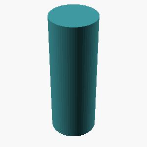
L2 · example 1 · mean 0.33 · max 1.00
Create a 75mm by 65mm plate of thickness 11mm with a centered 30mm-diameter through-hole.

 {
cube([75, 65, 11]);
translate([37.5, 32.5, 0]) cylinder(h=65, r=15, $fn=64);
}")
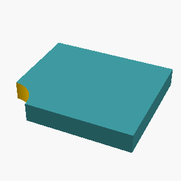
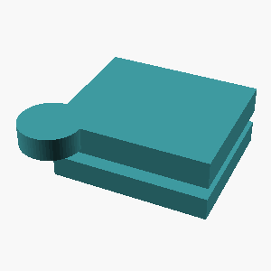
;
translate([37.5, -5, 0]) hole(r=15, depth=10);
// Holes have diameters of 30mm, so radius is 15mm
translate([0, 10, 5]) hole(r=15, depth=19);
// Second hole is shifted so it doesn't overlap with the first
translate([65, 10, 6]) hole(r=15, depth=20);")
L3 · example 2 · mean 0.14 · max 0.52
An L-shaped bracket 20mm wide: a horizontal leg 65mm long and a vertical leg 30mm tall, both 10mm thick, joined at a right angle. The horizontal leg has a circular hole of radius 4mm through its center, drilled vertically.

 {
// Main body shape
translate([0, 0, -20]) cube([65, 30, 10]);
// Drill hole (vertical, radius 4mm)
translate([0, 0, -10]) cylinder(h=50, r=4, $fn=64);
// Vertical leg cutout (30mm tall)
translate([0, -15, -15]) box([30, 30, 10]);
// Horizontal leg cutout (65mm long)
translate([-29, -15, 0]) translate([0, -15, 0]) box([65, 30, 5]); // Includes the 10mm thickness
// Cut out the circular hole in the horizontal leg
translate([-33, -15, -10]) sphere([4, 4, 1]);
}")
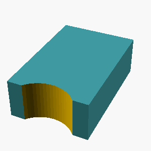
 {
cube([65,30,10]);
translate([32.5, 15, -1]) hole(r=4, $fn=64);
}")
 {
// Horizontal leg: 65x10
cylinder(h=10, r=5, $fn=64);
// Drill hole in horizontal leg
translate([32.5, 0]) cylinder(h=10, r=4, $fn=64);
// Vertical leg: 30x10, aligned at end of horizontal leg
translate([32.5, 0, -30]) cylinder(h=10, r=5, $fn=64);
}")

difference() {
cylinder(r=10, h=65, $fn=64);
advance() {
translate([32.5, 10, 0]) cylinder(r=10, h=30, $fn=64);
}
translate([16, 5, 0]) cylinder(h=30/2, r=4, $fn=64);
translate([48.5, 15, 0]) cylinder(h=30/2, r=4, $fn=64);
translate([49.5, 25, 0]) cube([101, 20, 10], $fn=64);
}")
L4 · example 3 · mean 0.08 · max 0.40
A monument-like shape: a circular base plate of radius 40mm and thickness 10mm, with a cylindrical post of radius 8mm and height 50mm standing centered on top of it, and the post capped with a hemispherical dome of radius 8mm.

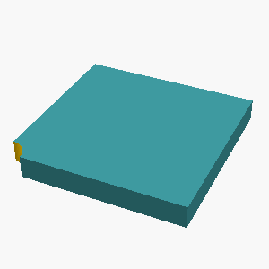
 {
// Circular base plate
cylinder(h=10, r=40);
// Cylindrical post on top of the base
translate([40, 0, 10]) cylinder(h=50, r=8);
// Hemispherical dome cap on top of the post
translate([40, 50, 0]) hemisphere(r=8);
}")
L1 · example 4 · mean 0.86 · max 1.00
A solid sphere with a radius of 20mm.

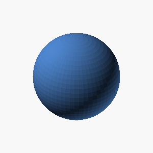
 sphere(r=20,$fn=64);")
;")
;")
L2 · example 5 · mean 0.10 · max 0.82
A solid box 30mm x 20mm x 20mm with a rectangular notch 8mm wide and 7mm deep cut into the middle of its top face, running through the full depth of the box.

 {
translate([10, 0.0, 0.0]) cube([30, 20, 20]);
translate([10, 10.0, 0.0]) box([8, 7, 20]);
translate([10, 10.0, 0.0]) line(4, 8, 0);
}")
 {
difference() {
cube([30, 20, 20]);
difference() {
translate([15, 0, 0]) plane([0, 0, 1], [0, 0, -1]); // Top face with hole
box([8, 7, 20]); // Notch with full depth
}
}
}")
L3 · example 6 · mean 0.19 · max 0.41
An L-shaped bracket 35mm wide: a horizontal leg 30mm long and a vertical leg 70mm tall, both 5mm thick, joined at a right angle. The horizontal leg has a circular hole of radius 6mm through its center, drilled vertically.

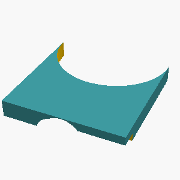
 {
// Main L-shaped base
cube([35, 70, 10]);
translate([0, 35, -1]) translation([15.0, 0, 0]);
translate([0, -10, -1]) translation([15.0, 35, 0]);
// Horizontal leg (width 30mm, height 15mm with hole, thickness 5mm)
cube([30, 15, 5]);
translate([0.0, -10.0, -1.0]) // Center of hole, adjust for hole radius 6mm
translation([-6, -6, 0]); // Center of hole, subtracting hole radius 6mm and leg thickness 5mm from positions
circular();
// Extract vertical leg geometry (to allow hole removal)
translate([10, -15, -1.0])
translation([0, 0, 0])
difference() {
cube([35, 15, 5]);
cube([35, 5, 15]);
}
// Extract hole cavity (to allow for hole removal)
difference() {
hole(6, $fn=64);
}")
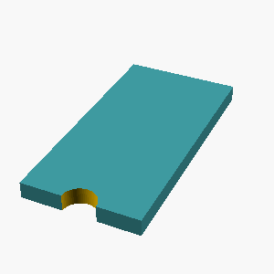
 {
// L-shaped bracket body
// Main body: rotated cube from -15mm to 20mm along X (35mm total width), -40mm to 10mm along Y (70mm tall)
rotate(90) {
cube([5,5,70]);
translate([12.5, 35, 10]) rotate(90) {
rotate(around_z(90)) cube([20,20,5]);
}
}
// Horizontal leg (part of body)
translate([12.5, 35, 10]) {
rotate(90) {
rotate(around_z(90)) cube([30,5,5]);
}
}
// Vertical leg (part of body)
translate([35, 12.5, 0]) {
rotate(90) {
rotate(around_z(90)) cube([5,70,5]);
}
}
// Circular hole in horizontal leg
translate([12.5, 35, 10]) {
rotate(90) {
rotate(around_z(-90)) {
sphere(r=6);
}
}")
 {
cube([35, 0, 0]); // Main working box
// L-shaped corner piece
cube([5, 70, 5]);
// Horizontal leg
translate([0, 35, 0])
cube([30, 5, 5]);
// Vertical leg
translate([0, 0, 35])
cube([5, 5, 70]);
// Horizontal leg
// Add a little space to the sides to avoid overlap issues during difference
translate([1.5, 0, 0])
cube([28, 5, 5]);
// Add vertical leg on top of the horizontal leg
translate([45, 0, 35])
cube([8, 5, 35]);
// Drill hole in the horizontal leg
translate([5, 0, 5]) // Position hole center relative to corner
translate([15, 0, 5]) // Position hole center relative to horizontal leg left edge
cylinder(h=12, r=6, $fn=64, startsized=0.5);
// Ensure bounding box is correct by replacin")
L4 · example 7 · mean 0.17 · max 0.49
A monument-like shape: a circular base plate of radius 40mm and thickness 5mm, with a cylindrical post of radius 23mm and height 30mm standing centered on top of it, and the post capped with a hemispherical dome of radius 23mm.

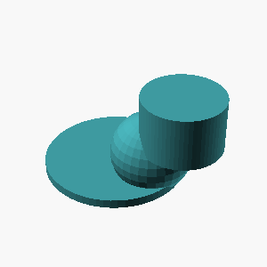
 {
// Circular base plate of radius 40mm and thickness 5mm
cylinder(h=5, r=40, $fn=64);
// Cylindrical post of radius 23mm and height 30mm centered on top of it
// We push down from top to bottom as lower mesh to preserve it after subtracting
translate([[-15, 25, -30]]) cylinder(h=30, r=23, $fn=64);
// Hemispherical dome of radius 23mm, capped on top of post
hemi_sphere(h=23, r=23, $fn=64);
}")
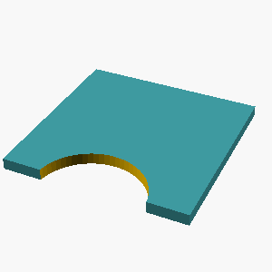
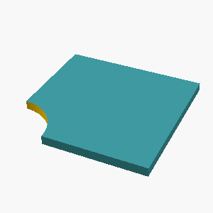
 {
// Bottom circular plate
sphere(r=[40,40], t=[5,5,5]) {
text(\"Plate\", [0,0,-40], size=15);
}
translate([40,40,5]) cylinder(h=5, r=40, $fn=64) {
text(\"Plate\", [20,20,0], size=15);
}
// Central post
translate([0,0,10]) sphere(r=23) {
text(\"Post\", [0,0,0], size=10);
}
translate([0,0,20]) cylinder(h=30, r=23, $fn=64) {
text(\"Post\", [15,15,-10], size=10);
}
// Hemispherical dome matched to post radius
rotation([0,0,1]) translation([0,0,30])
sphere(r=23) {
text(\"Dome\", [0,0,0], size=8);
}
}")
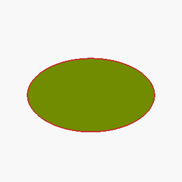
L1 · example 8 · mean 0.00 · max 0.00
Create an upright cylinder of height 70mm and diameter 80mm.

L2 · example 9 · mean 0.00 · max 0.00
Create a 70mm by 70mm plate of thickness 5mm with a centered 14mm-diameter through-hole.

L3 · example 10 · mean 0.00 · max 0.00
A rectangular plate 125mm x 100mm, 8mm thick, with a 4 by 3 grid of circular through-holes of radius 8mm, spaced 25mm apart, the grid centered on the plate.

L4 · example 11 · mean 0.00 · max 0.00
A monument-like shape: a circular base plate of radius 40mm and thickness 10mm, with a cylindrical post of radius 17mm and height 35mm standing centered on top of it, and the post capped with a hemispherical dome of radius 17mm.

L1 · example 12 · mean 0.00 · max 0.00
Create a sphere 80mm in diameter.

L2 · example 13 · mean 0.00 · max 0.00
A flat rectangular plate 75mm x 45mm, 10mm thick, with a circular hole of radius 8mm drilled through its center.

L3 · example 14 · mean 0.25 · max 0.45
A stepped circular shaft standing upright, made of 3 stacked coaxial cylinders from bottom to top: a section of radius 35mm and height 15mm, then a section of radius 29mm and height 30mm, then a section of radius 11mm and height 25mm. Each section is narrower than the one below it.

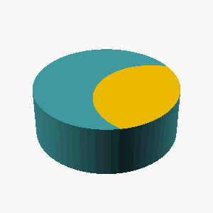
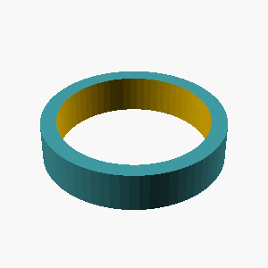
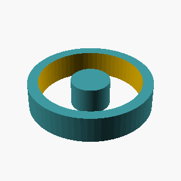
 {
create_steped_cylinder(35, 15, 29, 30, 11, 25);
}")
L4 · example 15 · mean 0.18 · max 0.88
An upright hollow tube 75mm tall, outer radius 15mm, inner radius 11mm, open at both ends, with 3 circular holes of radius 4mm drilled radially through the wall at half the tube's height, evenly spaced around the circumference.

 {
// Outer hollow cylinder with 35mm height
translate([0, 0, -375]) cylinder(h=75, r=15, $fn=64);
// Inner hollow cylinder (same 35mm, adjusted for radius change)
translate([0, 0, -375]) cylinder(h=75, r=11, $fn=64);
// 3 circular holes drilled radially at the top, middle (187.5mm), and bottom
hole(r=4, depth=37.5);
hole(r=4, depth=187.5);
hole(r=4, depth=367.5);
}")
 {
// Main upright hollow tube
offset(thickness=10) cylinder(h=75, r=13); // First shell
translate([35,0,0]) cylinder(h=75, r=11, flap=1, vpn=3); // Inner shell
// 3rd shell for internal structure
offset(thickness=21) cylinder(h=75, r=9);
translate([35,0,0]) cylinder(h=75, r=7, flap=1, vpn=3);
// Choose material type
if (Material == Poly)
write(\"test.obj\");
else
print();
}")
L1 · example 16 · mean 0.17 · max 0.51
A solid cone 65mm tall with a base radius of 15mm, point facing up.

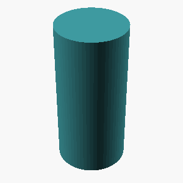
 {
cone(r=35, h=65, base=15, z=0, $fn=64);
}")
;")
 {
explode(); // Ensure the flat face is sharp (edge) rather than flat across
cone(h=65, r=15, top=\"acute\", origin=\"tip\");
}")
L2 · example 17 · mean 0.16 · max 0.55
Create an upright open-ended pipe: height 20mm, outer diameter 40mm, wall thickness 3mm.

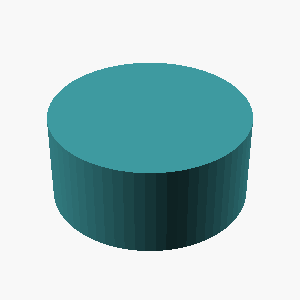
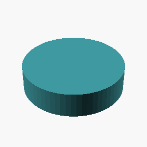
 {
// Main pipe body
pipe([40,20,3]); // Outer diameter 40mm, height 20mm, thickness 3mm
// Open bottom (cylinder without bottom face)
pipe([40,17,3]); // Height 20mm - 3mm cutoff
}")
 {
// Main body of the pipe
col(40, // Height
wall_thk = 3,
r = 20); // Outer radius
// Inner empty space (pipe lumen)
u(30, // 20mm outer - 3mm wall
r = 13);
}")
L3 · example 18 · mean 0.33 · max 0.48
A stepped circular shaft standing upright, made of 3 stacked coaxial cylinders from bottom to top: a section of radius 29mm and height 25mm, then a section of radius 20mm and height 30mm, then a section of radius 8mm and height 15mm. Each section is narrower than the one below it.

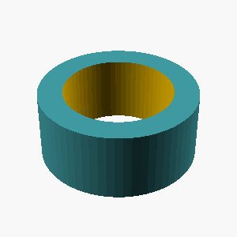
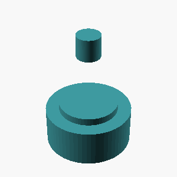
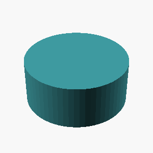
 {
cylinder(r=29, h=25, $fn=64);
translate([0, 0, 30])
cylinder(r=20, h=30, $fn=64);
translate([0, 30, 0])
cylinder(r=8, h=15, $fn=64);
}")
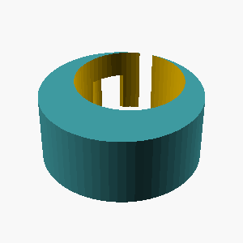
 {
// Bottom section: radius 29mm, height 25mm
translate([0, 0, -25]) cylinder(h=25, r=29, $fn=64);
// Middle section: radius 20mm, height 30mm
translate([0, 25, -30]) cylinder(h=30, r=20, $fn=64);
// Top section: radius 8mm, height 15mm
translate([0, 55, -15]) cylinder(h=15, r=8, $fn=64);
}")
 {
// Bottom section: radius 29mm, height 25mm
// Starting below the first section (0 to -25) and going down to -64
cylinder(h=25, r=29, $fn=64, d=0, radius_sun=0);
// Middle section: radius 20mm, height 30mm
// Starting below the second section (0 to -30) and going down to -94
cylinder(h=30, r=20, $fn=64, d=0, radius_sun=0);
// Top section: radius 8mm, height 15mm
// Starting below the third section (0 to -15) and going down to -24
cylinder(h=15, r=8, $fn=64, d=0, radius_sun=0);
}")
L4 · example 19 · mean 0.00 · max 0.00
A gear-like disc 6mm thick with radius 35mm, with 12 rectangular teeth evenly spaced around its rim. Each tooth is 6mm wide and extends 10mm radially outward from the rim, spanning the full thickness of the disc.

L1 · example 20 · mean 0.00 · max 0.00
Create an upright cylinder of height 50mm and diameter 70mm.